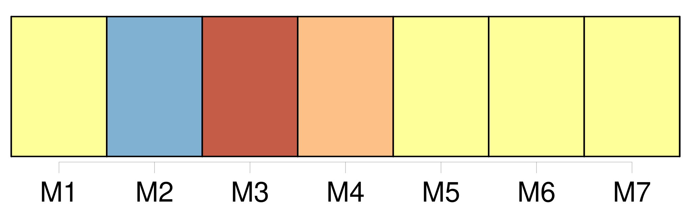

Longueur nb maillons : 21 mentions |
  |
Deux ans avant les événements racontés dans le précédent chapitre, un petit paquebot luttait contre les flots de [l'Océan Pacifique] [Cette mer] ne justifie pas toujours [son] nom, et, en ce jour du quatre juin 1873, [elle] présentait un aspect effrayant. [26 phrases]
Ils aidèrent les matelots à mettre les chaloupes à [la mer] — il n'y en avait que quatre — et, en risquant cent fois leur vie, les passagers furent mis en état de se sauver. Malheureusement, la dernière chaloupe, contenant le capitaine et les hommes de l'équipage, effleura un brisant de trop près, et on la vit s'enfoncer dans les flots bouillonnants de [l'Océan]
C'était un grand malheur, car, si on parvenait à dégager le paquebot, comment parviendrait -on à lui faire reprendre [la mer] , sans capitaine et sans matelots! [3 phrases]
Ils firent bien, car deux heures plus tard, le « Queen of the Waves » se brisait contre les récifs, et il n'en resta plus, bientôt, que des débris flottants, sur [la mer en furie] [3 phrases]
La seule chose certaine, c'était qu'on était sur une terre [du Pacifique] ; il fallait se contenter de ce renseignement, pour le moment. [14 phrases] Du haut de cette montagne, on verrait la terre s'étendre à perte de vue, ou bien on apercevrait [la mer] l'entourant, hélas!!
d' [un cercle presque infranchissable pour les naufragés] [17 phrases]
… on ne savait pas en quelle partie de [l'Océan] on se trouvait, le « Queen of the Waves » s'étant échoué, après avoir battu [la mer] comme une épave. Bientôt, Roger et Paul s'arrêtèrent, ils avaient atteint le bord de [la mer] , et c'est là qu'ils voulaient passer la nuit. [3 phrases] [L'Océan] offrait, cependant une particularité, qui ne manqua pas d'intéresser les deux amis malgré les angoisses de l'heure présente ; l'eau était si limpide que le regard pouvait plonger à une grande profondeur : quand les vagues se retiraient, on voyait même le fond de [la mer] , on apercevait les poissons qui nageaient entre deux eaux. [6 phrases] Avant de retourner au campement, ils voulurent explorer davantage les bords de [la mer] [3 phrases]
… » [8 phrases]
» Il n' [y] resta pas longtemps. [10 phrases]
» |
La ressource peut être téléchargée sur la page Ortolang
Si vous avez des questions ou vous voyez des erreurs, merci d'envoyer un mail à silvia.federzoni89@gmail.com
Site développé par S. Federzoni (contact)